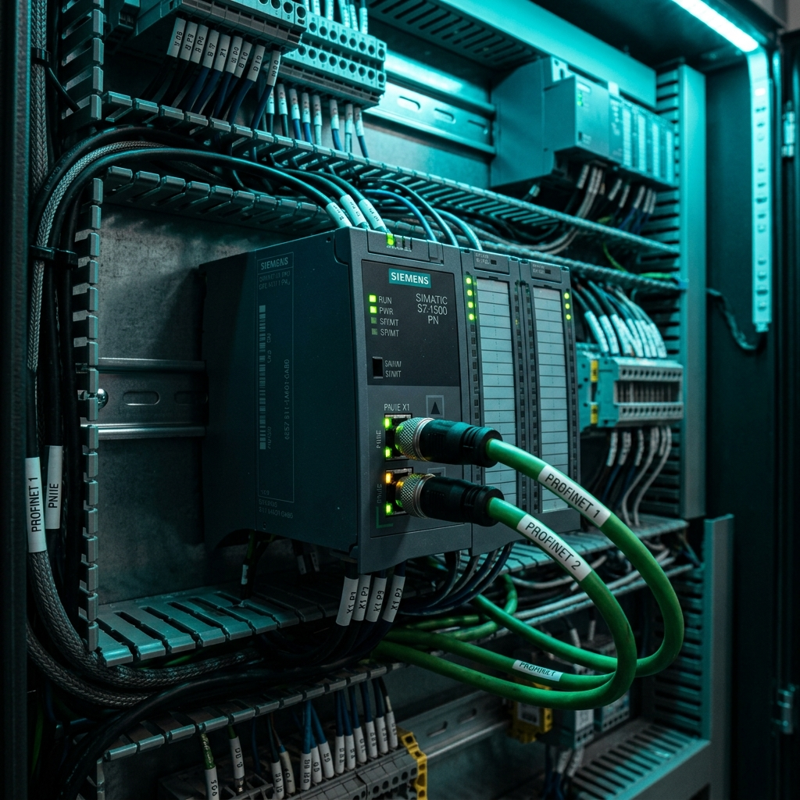

Siemens Industrial Copilot y ChatGPT en TIA Portal: La Revolución en Software de Control

La alianza estratégica entre Siemens y Microsoft integrando la tecnología de OpenAI (ChatGPT) en el entorno industrial dio origen a Siemens Industrial Copilot. Esta herramienta revoluciona la ingeniería en TIA Portal (Totally Integrated Automation), permitiendo a ingenieros de control en Saltillo, Ramos Arizpe y la región Sureste de Coahuila desarrollar líneas de producción hasta un 60% más rápido.
💡 ¿Qué es Siemens Industrial Copilot?
Es un asistente generativo basado en IA integrado directamente en TIA Portal. Permite traducir instrucciones en lenguaje natural en código estructurado SCL (Structured Control Language) para controladores SIMATIC S7-1200 y S7-1500, además de autogenerar interfaces HMI en WinCC Unified y explicar bloques de código heredados de forma instantánea.
1. Generación Automática de Código SCL en TIA Portal
El lenguaje SCL (basado en Pascal / IEC 61131-3) es idóneo para el procesamiento de algoritmos, cálculos matemáticos y gestión de arreglos en PLC Siemens. Mediante consultas en lenguaje natural (Prompts), el copiloto genera la estructura completa de bloques de función (FB) o funciones (FC).
Caso Práctico: Control PID y Diagnóstico de VFD por Profinet
Un usuario solicita al Copilot / ChatGPT:
El asistente no solo escribe el código SCL optimizado con manejo de excepciones y bloques de memoria DB, sino que también agrega comentarios detallados en cada línea para simplificar las auditorías de mantenimiento.
2. Autogeneración de Pantallas WinCC Unified HMI
Uno de los procesos más tardados en la puesta en marcha es el diseño visual de las pantallas de interfaz hombre-máquina. Con la integración de IA generativa:
- Layouts Inteligentes: Al describir el proceso ("Crear una pantalla de supervisión con 4 tanques, medidores de nivel dinámicos y botones de arranque/paro"), el sistema maqueta los elementos gráficos en WinCC Unified.
- Vínculo Automático de Tags: Conecta los símbolos visuales con la base de datos de etiquetas del PLC S7-1500 de forma transparente sin errores de asignación manual.
3. Explicación y Depuración de Código Legacy en Planta
Muchos integradores en parques industriales de Coahuila (como Parque Ramos Arizpe, Derramadero o Zapalinamé) enfrentan el reto de modificar máquinas antiguas con código sin documentar. Al copiar un bloque SCL complejo en ChatGPT o Siemens Industrial Copilot, la herramienta:
- Genera un resumen operativo indicando la secuencia lógica exacta del programa.
- Señala posibles cuellos de botella en los tiempos de ciclo del PLC (Scan Time).
- Propone refactorizaciones del código para hacer la rutina más limpia y modular.
🛠️ ¿Reemplazará el Copilot al Programador de PLC?
CONCLUSIÓN DE INGENIERÍA: La Inteligencia Artificial no sustituye al programador; sustituye al programador que no utiliza IA. Las habilidades clave en 2026 son la arquitectura de control, la seguridad funcional (Safety SIL3/PLe) y la validación en campo. La IA resuelve la sintaxis repetitiva para que los ingenieros se concentren en la lógica estratégica de manufactura.
⚡ Expertos en Siemens TIA Portal & Automatización en Saltillo
En Robologix Automation desarrollamos soluciones avanzadas en PLC Siemens S7-1200, S7-1500 y WinCC, aplicando metodologías modernas de ingeniería. Capacitamos a tu personal operativo e ingenieros con constancia oficial STPS DC-3 en Saltillo y Ramos Arizpe.
¿Necesitas integrar controladores Siemens o capacitar a tu equipo?
Cotiza con nuestros especialistas en ingeniería de control y automatización.
Contactar por WhatsApp (+52 844 455 1869)